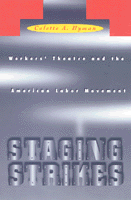

Art and politics share the spotlight in a lively history of workers' theater and culture
Art and politics share the spotlight in a lively history of workers' theater and culture


 Art and politics share the spotlight in a lively history of workers' theater and culture
Art and politics share the spotlight in a lively history of workers' theater and culture

|  |
Staging StrikesWorkers' Theatre and the American Labor MovementCollette A. Hymancloth EAN: 978-1-56639-504-5 (ISBN: 1-56639-504-6) |
"This book offers a new and most interesting perspective on radical artists of the 1930s and their efforts to promote a progressive political agenda. Theater activists sought to write and perform plays that focused on the values and experiences of ordinary workers; moreover, they chose dramatic styles such as melodrama, slapstick, and musical comedy, known for their broad appeal. The result, Hyman convincingly argues, were plays that compellingly portrayed the lives of working-class Americans but also reproduced common patterns of racism and sexism. While Hyman laments these plays' role in perpetuating prejudice, she admires their astute and creative use of popular culture. She situates both these judgments in thoughtful and subtle analyses that deepen our understanding of the possibilities and limitations of politically inspired 1930s art."
—Gary Gerstle, Associate Professor of History, Catholic University of America
In the thirties, those on the political left, Socialists, Communists, artists and writers, educators, and labor movement activists, shared the belief that leisure activities should reflect and promote the interests of working people. Cultural activities should be used to educate workers in bringing about radical social and political changes and to draw people together around shared interests. Workers' theater became a successful vehicle for political education and for involving the audience in the labor movement.
Such plays as "Let Freedom Ring" and "Waiting for Lefty" depicted experiences that paralleled the audiences' own, that entertained and absorbed them, and that showed them the personal, social, economic, and political changes that could be achieved through the struggles of the labor movement.
In clear and moving prose, Hyman traces the history of workers' theater from its grassroots origins to the Federal Theater Project of the WPA under Roosevelt and into unions' recreational programs. Even today, the tradition of workers' theater endures in local and regional productions that reflect current worker concerns or revive significant workers' plays of the Depression period. Hyman shows that the significance of workers' theater lies not only in the plays produced but also in the audiences' experience, in coming together out of common concerns to achieve a solidarity that emphasizes the effectiveness of collective action.
Excerpt available at www.temple.edu/tempress
Acknowledgments
1. Backdrop: Workers' Theatre and Organized Labor
2. Prologue: New Playwrights and Worker-Students in the 1920s
3. Act I: A Movement Grows across the Nation
4. Interlude: Unionism and Militance in the Plays of the Workers' Theatre Movement
5. Act II: Two Unions Take to the Stage
6. Interlude: Leisure and Popular Entertainment in Labor Plays
7. Act III: Workers' Theatre Becomes Union Recreation
8. Epilogue: Can Workers' Theatre Survive the Decline of the Labor Movement?
Postscript: Angels in America and the Study of Workers' Theatre
Notes
Index
 | Colette A. Hyman is Associate Professor of History and Director of Women's Studies, Winona State University, Minnesota. She is the author of several articles on political art and women in the labor movement. |
Critical Perspectives on the Past, edited by Susan Porter Benson, Stephen Brier, and Roy Rosenzweig.
Critical Perspectives on the Past, edited by Susan Porter Benson, Stephen Brier, and Roy Rosenzweig, is concerned with the traditional and nontraditional ways in which historical ideas are formed. In its attentiveness to issues of race, class, and gender and to the role of human agency in shaping events, the series is as critical of traditional historical method as content. Emphasizing that history is itself an interpretation of material events, the series demonstrates that the historian's choices of subject, narrative technique, and documentation are politically as well as intellectually constructed.
© 2015 Temple University. All Rights Reserved. This page: http://www.temple.edu/tempress/titles/952_reg.html.